01
Sown in silt
As the pre-monsoon rains arrive, jute is sown across the alluvial floodplains of the Ganges–Brahmaputra delta. In Bengal it is simply pāṭ.
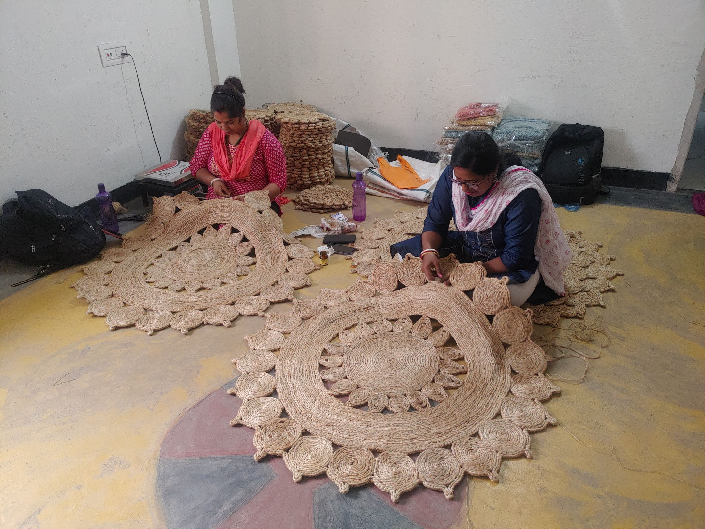
Pāṭ — jute. Sown in the silt of the Ganges delta, braided by sixty-five women in Howrah, and returned to the soil when its work is done.
Chapter I · One season of jute, from silt to strand
01
As the pre-monsoon rains arrive, jute is sown across the alluvial floodplains of the Ganges–Brahmaputra delta. In Bengal it is simply pāṭ.
02
Figures as widely cited for one growing season; its fallen leaves return to the field as green manure.
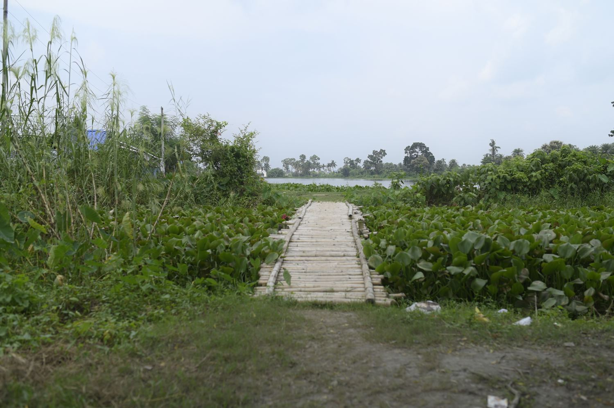
03
Cut stalks are sunk in still village ponds for two to three weeks. Native microbes loosen the bark. No solvent, no furnace — only water, time and patience.
04
Stripped by hand, washed and sun-dried, the fibre takes on its lustre: cellulose and lignin, grown rather than refined.
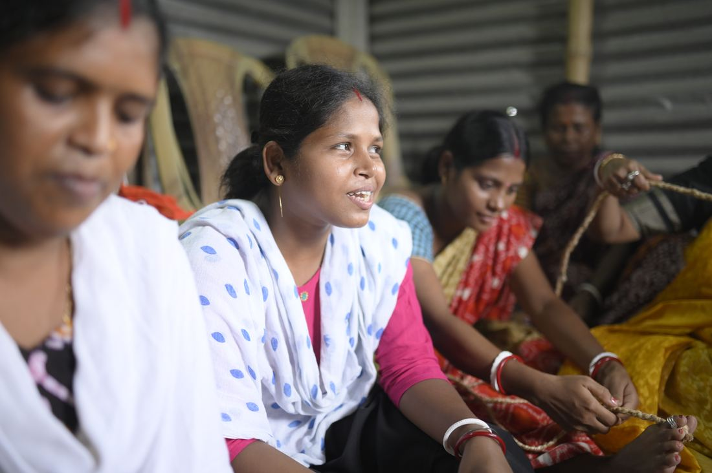
05
Three plies, two hands, unbroken tension — the foundation for our signature crochet bags, structured totes, and sculpted home décor accents.
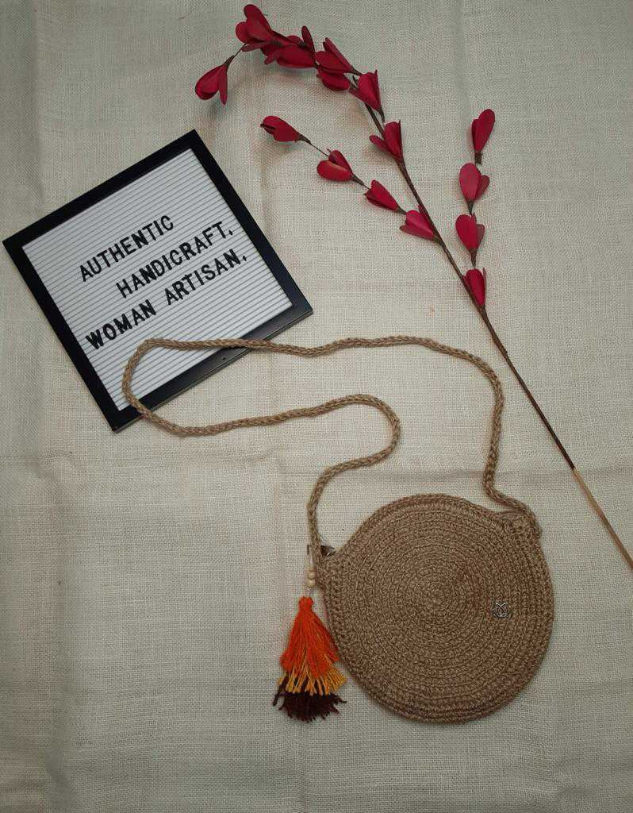
06
Every offcut is twisted back into twine, trims and tassels. In true zero-waste ecology, our agricultural cycle leaves zero residue: the tender, antioxidant-rich leaves of the jute plant become Amata Moroheiya Infusion — a nourishing botanical tea. From leaf to stalk to finished crochet bag, nothing is discarded.
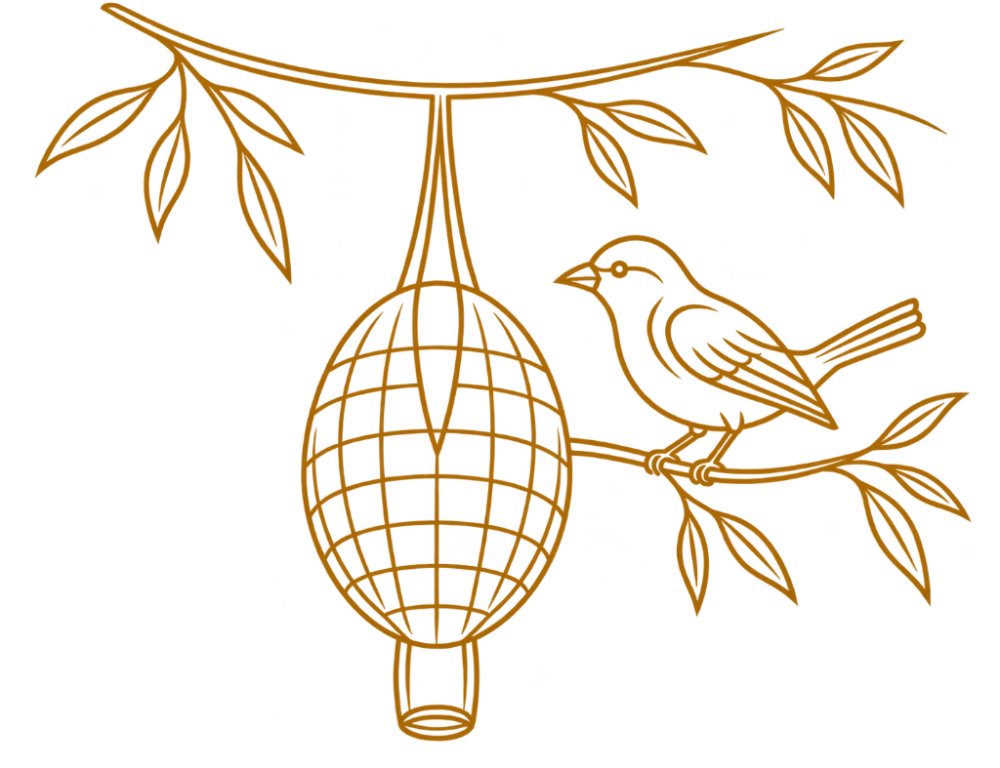
Ploceus philippinus — The Baya Weaver, our brand mascot and animal soul. Master architects who weave zero-waste suspended nests without adhesives.
Chapter II · Animal Soul & Biomimicry
বাবুই পাখিরে ডাকি, বলিছে চড়াই, “কুঁড়ে ঘরে থেকে কর শিল্পের বড়াই, আমি থাকি মহাসুখে অট্টালিকা ’পরে, তুমি কত কষ্ট পাও রোদ, বৃষ্টি, ঝড়ে।” বাবুই হাসিয়া কহে, “সন্দেহ কি তায়? কষ্ট পাই, তবু থাকি নিজের বাসায়। পাকা হোক, তবু ভাই, পরের ও বাসা, নিজ হাতে গড়া মোর কাঁচা ঘর, খাসা।”
The sparrow mocks the weaver bird: “You live in a straw hut and boast of your craft, while I live in comfort on a mansion and you suffer sun, rain and storm.” The weaver laughs: “No doubt. Yet I live in a home of my own. Brick it may be, brother — but yours is another's house. Mine is raw, built with my own hands, and it is splendid.”
Rajanikanta Sen · স্বাধীনতার সুখ
Every offcut becomes twine and tassels; tender plant leaves yield Amata Moroheiya Infusion.
No synthetic glue or stiffeners. Every crochet bag and décor piece keeps its form through interlocking knot tension.
When its long life ends, the piece dissolves into fertile soil humus in 45 days. Complete ecological closure.
Chapter III · How We Create
65
women in the villages of Howrah and Nadia form the spine of the collective. Not factory labour — the living memory of Bengal's hand.
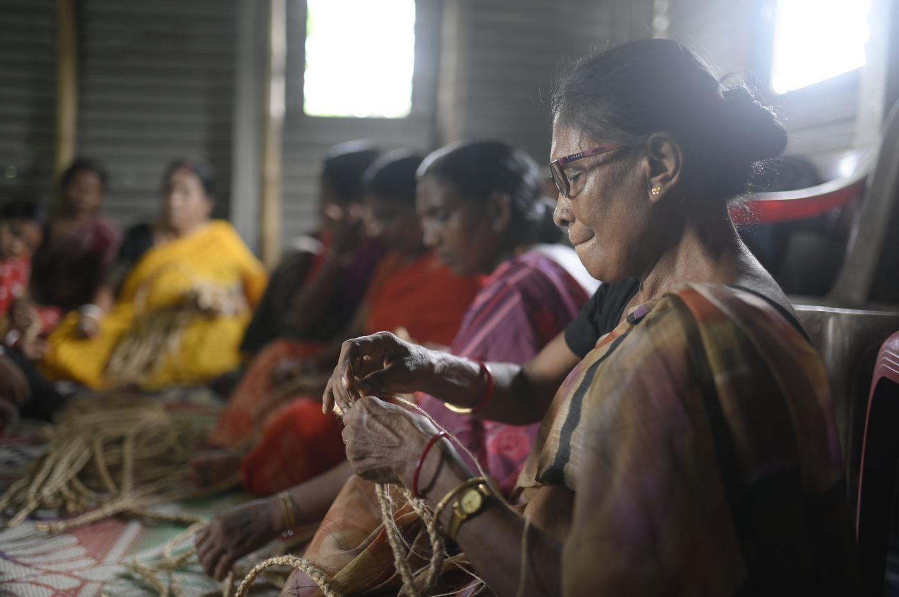
For generations the craft trade kept these rural women invisible while intermediaries captured the margin. Divulge operates on radical dignity: wages set well above prevailing rural benchmarks, flexible home-and-cluster workspaces, zero child labour, and continuous training in fine crochet and knot tension — ensuring mastery and economic autonomy remain anchored in the village.
“Before Divulge, our craft had no formal value. Today I earn an independent living, support my family's education, and teach the younger women the art of zero-waste crochet knotting.”
What We Create · The Curated Product Collection
Hand-crocheted golden jute with natural terracotta tassel and cotton lining. Zero petrochemicals.
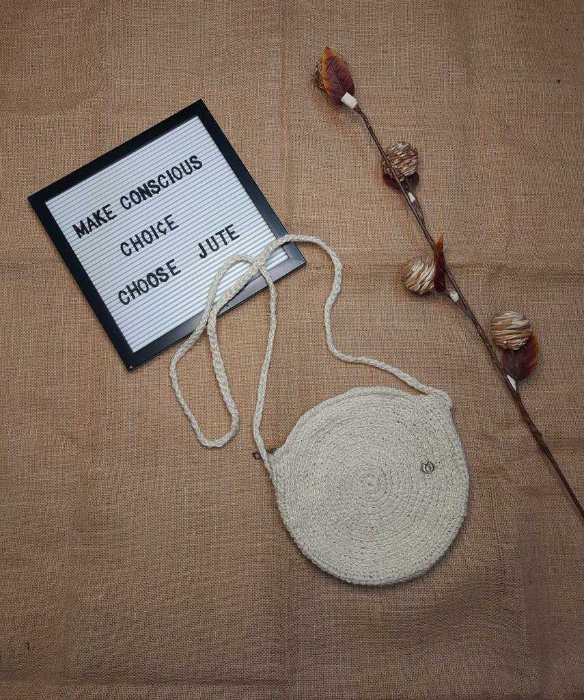
Interlocking open-stitch crochet weave designed for daily living. Ultra-durable, lightweight, and 100% biodegradable.
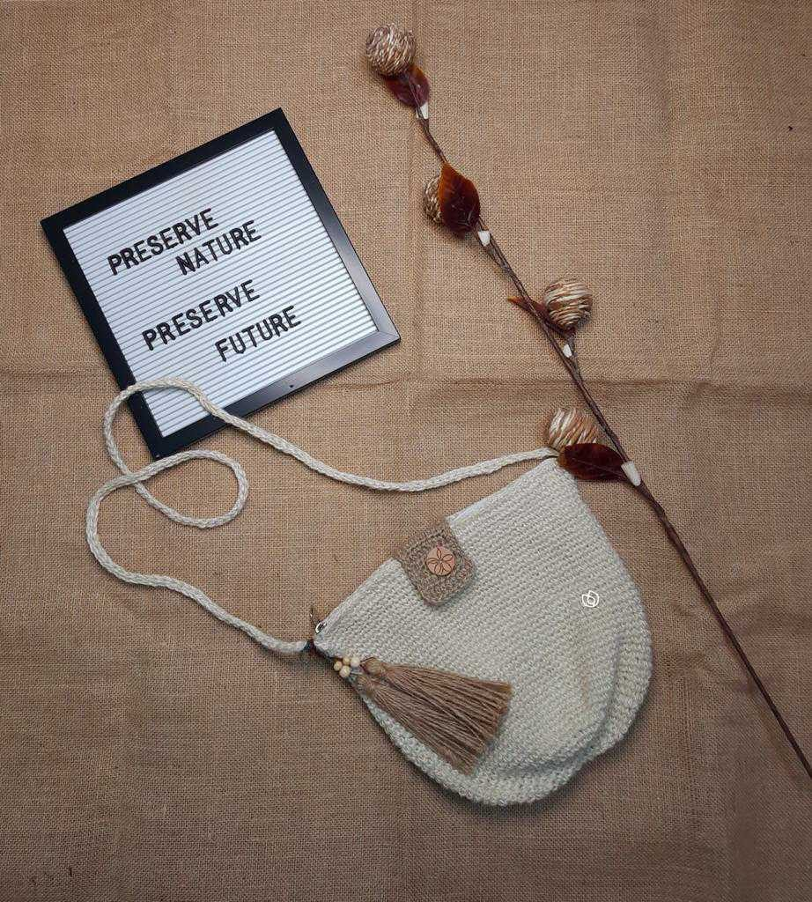
Compact envelope clutch woven from fine two-ply golden strand with authentic bamboo button closure.
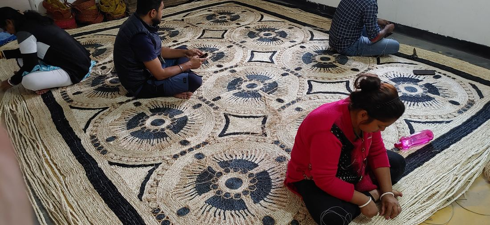
Monumental room-scale floor medallion stitched by hand over 180 hours. A sanctuary centerpiece.
Concentric braided and stitched table mats naturally heat-resistant and soothingly tactile.
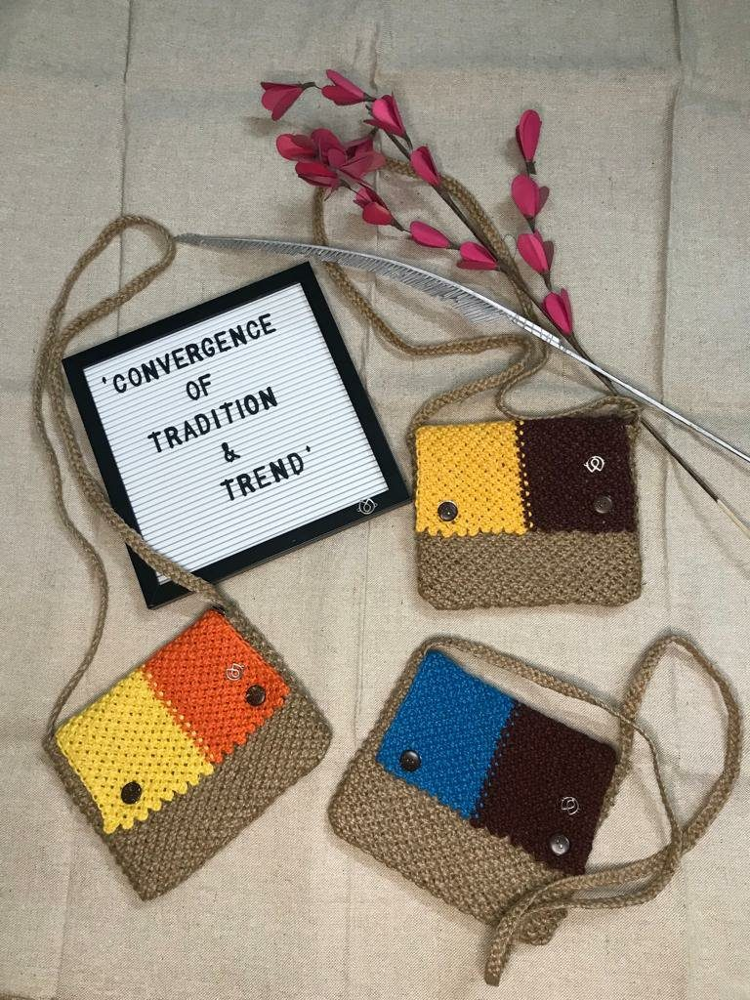
Interlocking tension basket supporting indoor botanicals without artificial wire or glue.
Chapter IV
0/ 45 days
Jute · plant cellulose
Fresh burial
A finished jute weave rests on moist loam. The fibre network is intact.
0% biodegraded
Polypropylene · "eco" bag
Petrochemical lock
Polymer chains offer soil microbes nothing to digest. The surface stays sealed.
0% biodegraded
Indicative timeline for untreated jute in warm, moist, living soil; real rates vary with climate and weave. Polypropylene does not biodegrade on this timescale — it fragments.
The ecological ledger
| Parameter · 1–10 | Jute | Plastic |
|---|---|---|
| Initial cost benefit | 3 | 8 |
| Societal value | 8 | 2 |
| Ecological value | 10 | 1 |
| Disposal & clean-up | 8 | 2 |
| Ethical value | 10 | 1 |
| Weighted index | 7.8 | 4.2 |
Source: Divulge research brief, Ecological Economics of Jute.
Chapter V
This archive is not a storefront. Shaped by conversations with Padma Bhushan design visionary Rajiv Sethi of the Asian Heritage Foundation, Divulge carries grassroots Bengal craft into museums, pavilions and design dialogue — documenting techniques before they vanish.
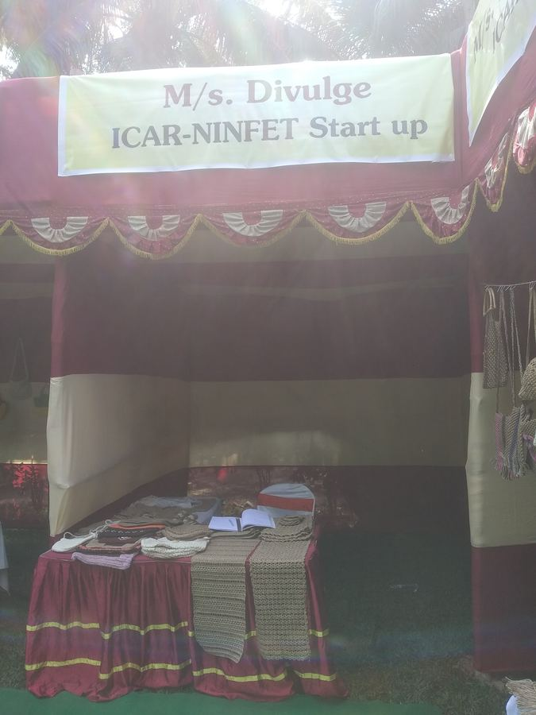
Mar 2022 · Kolkata
ICAR-NINFET start-up incubation stall
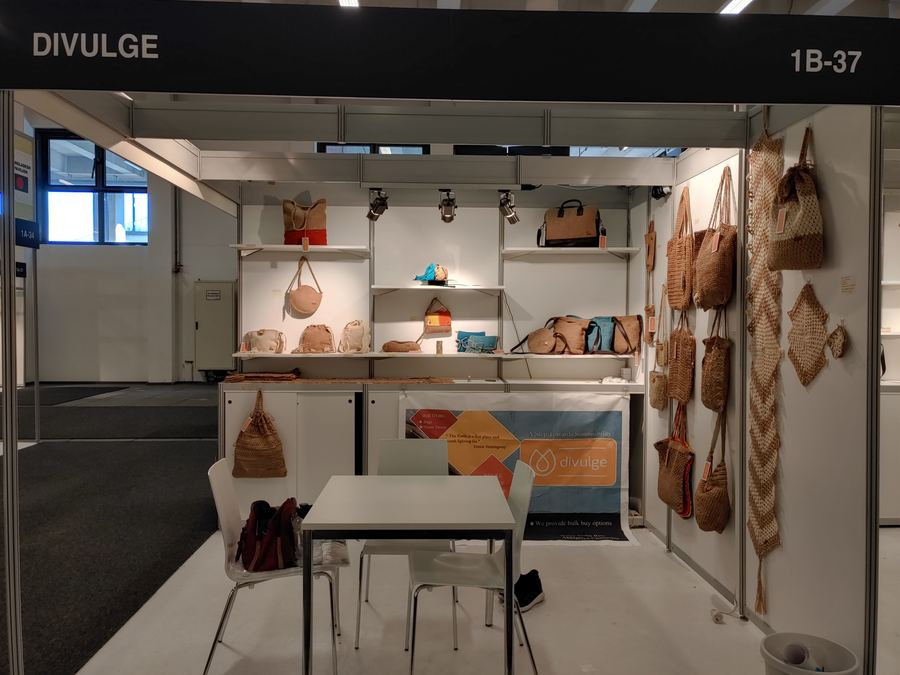
Jul 2022 · Berlin
Messe Berlin, stand 1B-37 (European Debut)
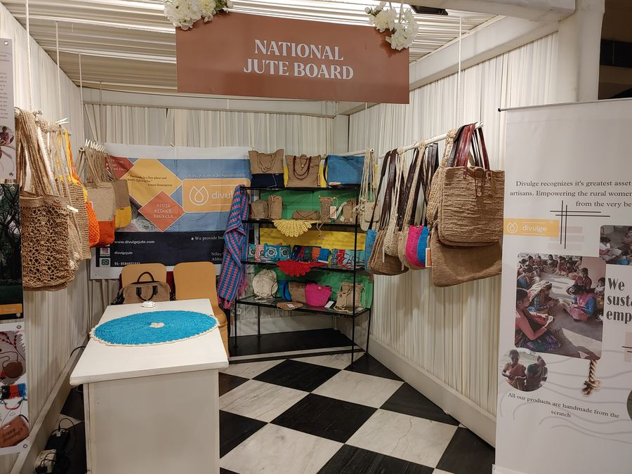
Aug 2022 · Kolkata
National Jute Board central pavilion
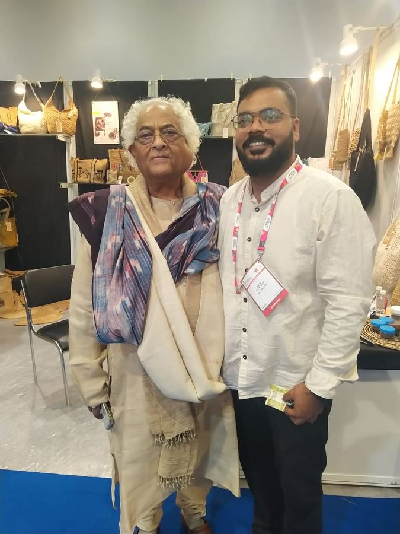
Feb 2024 · New Delhi
Cultural dialogue with Rajiv Sethi
Patron & Mentor · An Archival Milestone
“When renowned cultural curator, scenographer, and Padma Bhushan design visionary Rajiv Sethi of the Asian Heritage Foundation encountered Divulge, he was so profoundly moved by the craftsmanship and quiet dignity of our women artisans that he personally invited the Divulge team to his private residence for lunch.”
His mentorship continues to illuminate our curatorial journey — confirming that Bengal’s living craft belongs on the world’s most distinguished cultural platforms, museums, and thoughtful living spaces.
Guardians of the Strand · Leadership & Vision
Bridging generational Bengal craft with sustainable global living. Divulge Living is steered by founders dedicated to radical artisan dignity, circular zero-waste ecology, and elevating handcrafted jute onto the world stage.
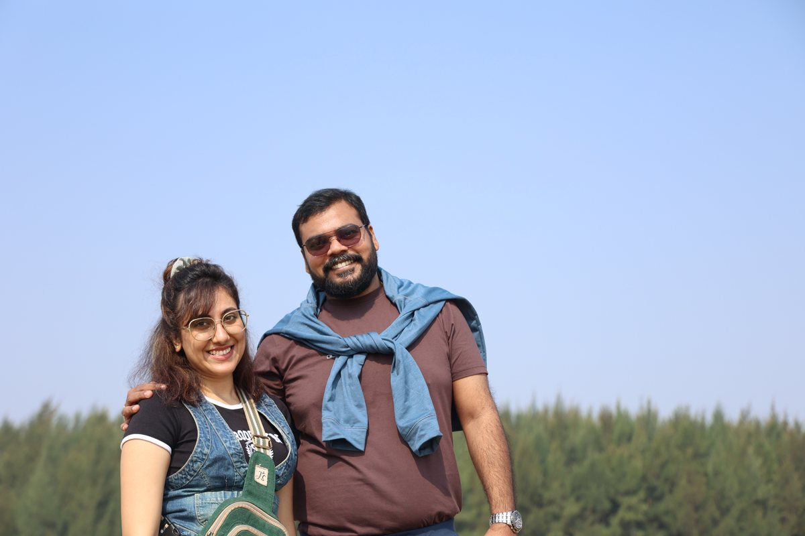
Founder & Managing Director
Merchant Navy Officer Turned Eco-Entrepreneur
A former navigating officer with British Petroleum who navigated global trade routes, Nilay returned to his ancestral Bengal with a profound vision: to rescue the "Golden Strand" from coarse industrial packaging and celebrate it as a world-class luxury material.
Under his leadership, Divulge established fair-living wage standards for over 65 rural craftswomen, pioneered 100% zero-waste knotting techniques, and secured institutional dialogues with design visionaries including Padma Bhushan Rajiv Sethi.
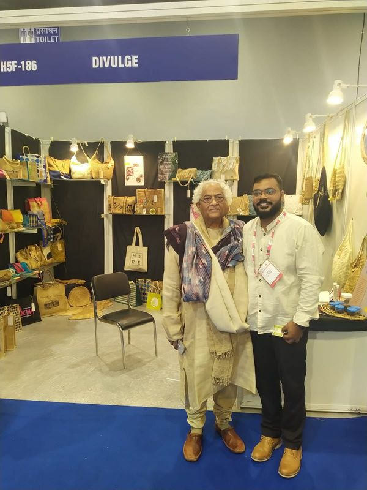
Co-Founder & Head of Strategy
Business Development, Supply Chain & Artisan Partnerships
Kanika leads global business development, operational strategy, and artisan cluster integration across West Bengal. Her focus ensures rural craftswomen have direct access to sustainable, high-value consumer markets without exploitative intermediaries.
She orchestrates brand partnerships, institutional outreach, and design innovation across Divulge’s handcrafted crochet bag and interior décor collections, while championing female economic leadership and sustainable artisan enterprise.
Sister Enterprise & Circular Agriculture
Together, Nilay and Kanika also guide Amata (amata.in) — a wellness venture pioneering certified organic prebiotic Moroheiya jute leaf infusions. While Divulge weaves the plant’s strong golden stems into heirloom crochet bags and home décor, Amata harvests the nutrient-packed leaves for botanical teas — realizing a 100% whole-plant, zero-waste agricultural paradigm.